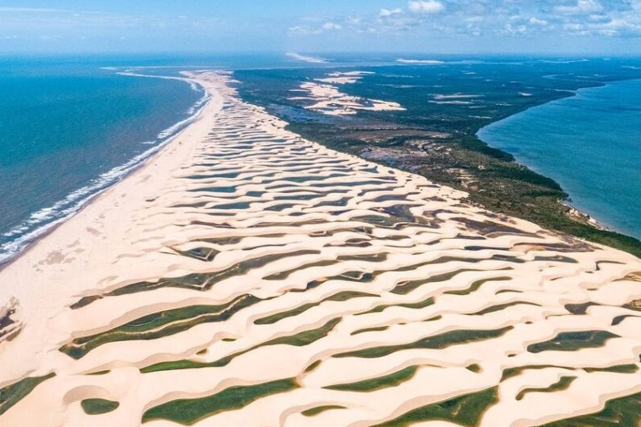
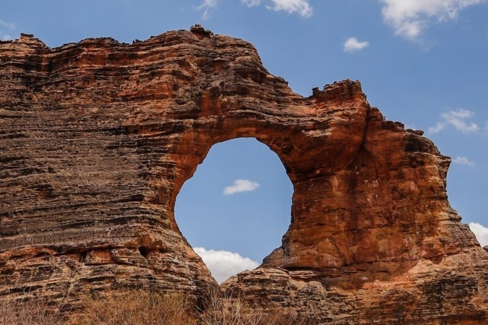
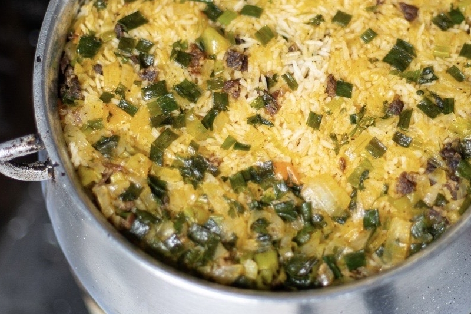
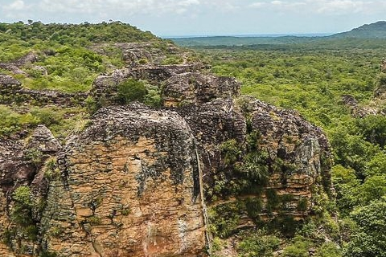

Delta do Parnaíba: Um Espetáculo da Natureza

O Delta do Parnaíba é uma das maiores maravilhas naturais do Brasil! Com sua fauna e flora
exuberantes, oferece experiências incríveis em passeios de barco, observação de golfinhos e pôr
do sol memorável. Conheça também as ilhas paradisíacas, as lagoas de água doce e as tradições
dos ribeirinhos que vivem nessa região mágica. Um destino imprescindível para ecoturismo e
contato com a natureza.
Johny William
24/03/2026 - 14:30
Serra da Capivara: Patrimônio Histórico e Arqueológico

Localizada em São Raimundo Nonato, a Serra da Capivara é um Patrimônio da Humanidade pela UNESCO!
Abriga sítios arqueológicos com pinturas rupestres milenares e oferece trilhas espetaculares em
meio à caatinga. O Museu do Homem Americano complementa a experiência, apresentando artefatos
fascinantes. Um destino imperdível para quem busca conectar-se com a história pré-histórica do
Brasil.
Johny William
22/03/2026 - 11:15
Teresina: Cultura e Gastronomia na Região

A capital piauiense oferece um rico acervo cultural com museus, teatros e galerias de arte. A
Ponte Estaiada e o Encontro dos Rios Poti e Parnaíba proporcionam cenários belíssimos para
passeios pelas avenidas modernas. Não deixe de provar a culinária local autêntica: burritoide,
caldo de tainha e doces caseiros. Teresina é perfeita para viagens de turismo urbano
investigativo e cultural.
Johny William
20/03/2026 - 16:45
Parque Nacional de Sete Cidades: Paisagens Cinematográficas e Formações Rochosas

Localizado entre os municípios de Brasileira e Piracuruca, no norte do Piauí, o Parque Nacional de Sete Cidades fascina visitantes com suas paisagens cinematográficas e formações rochosas únicas, repletas de simbolismo, história e exuberância natural. O parque também abriga pinturas rupestres, trilhas ecológicas, piscinas naturais e uma belíssima cachoeira. Aberto diariamente das 7h às 17h, o acesso ao local é gratuito.
Johny William
18/03/2026 - 10:20